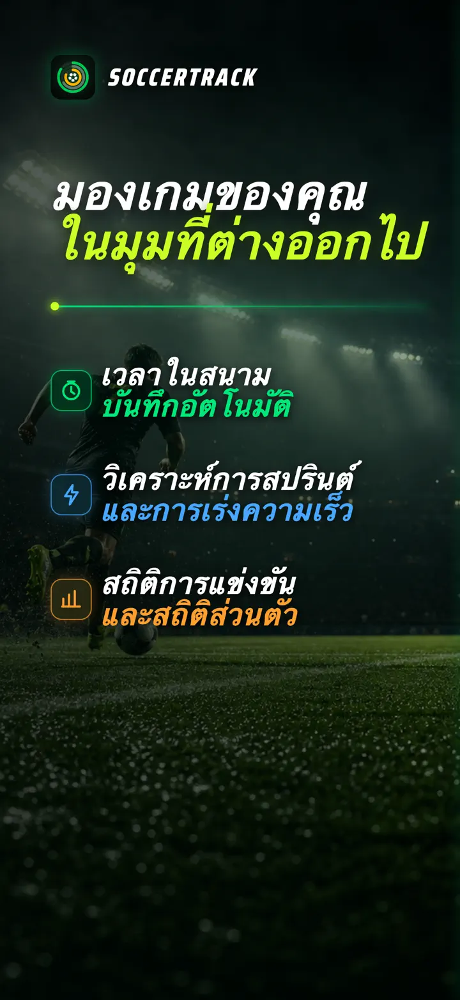
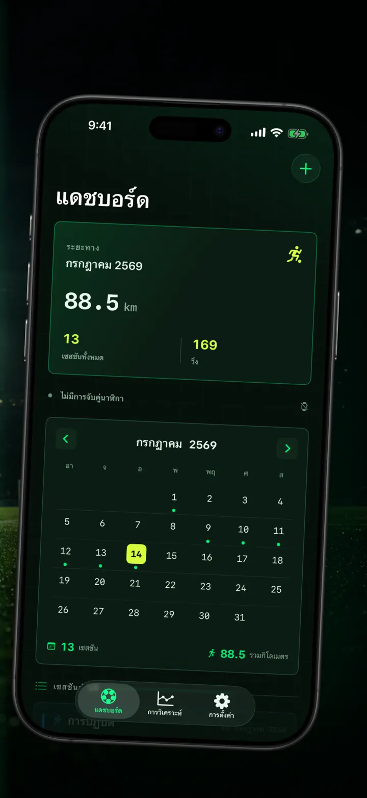
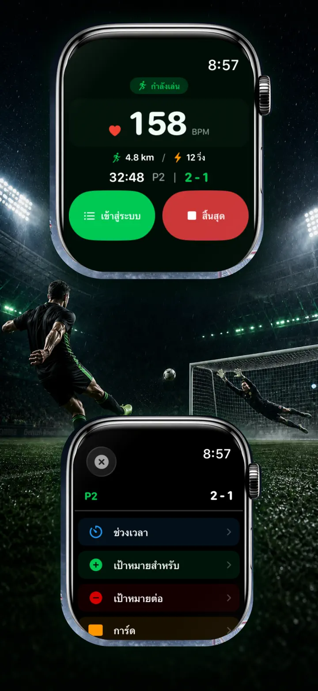
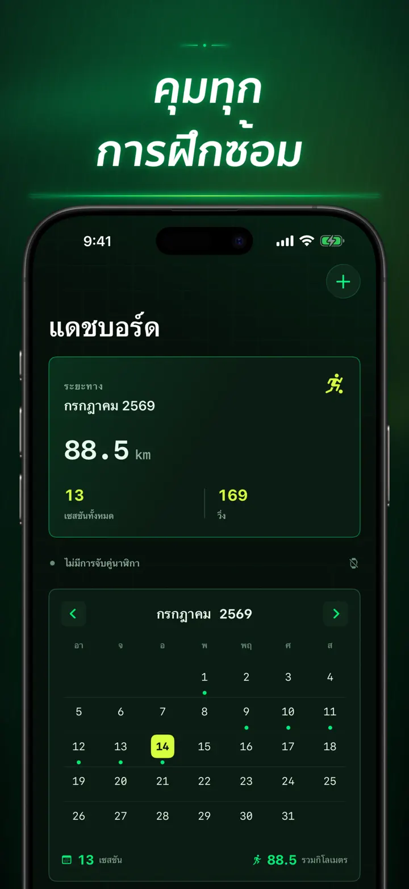
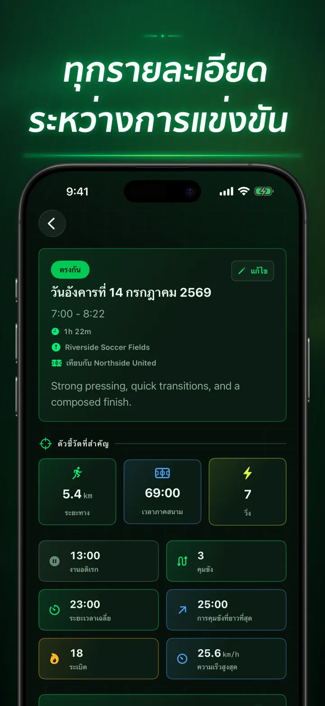
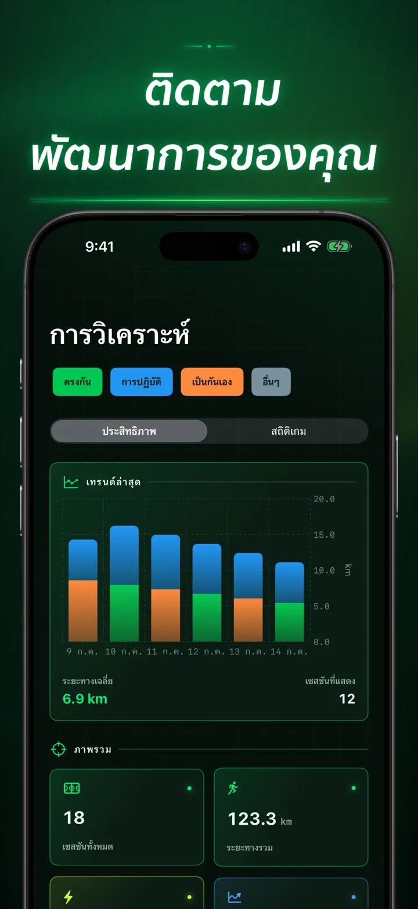
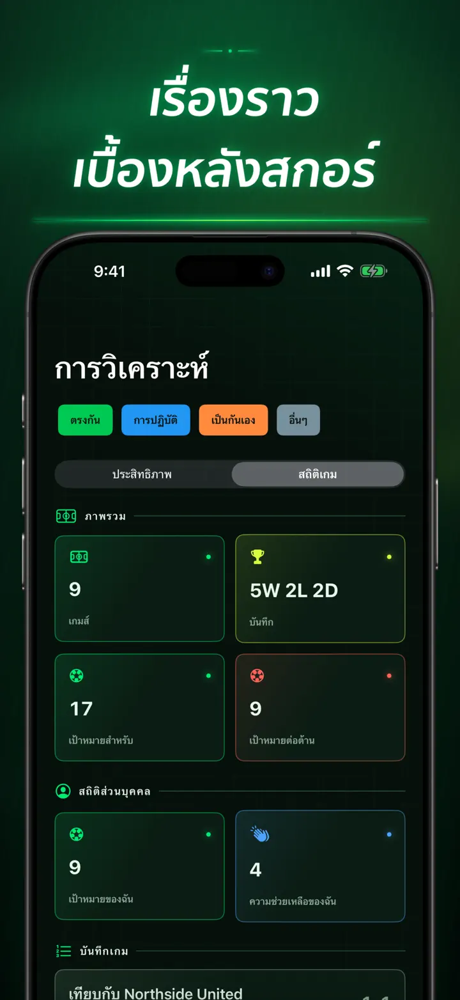
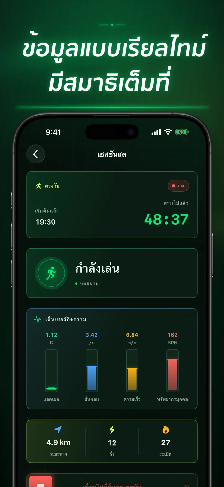
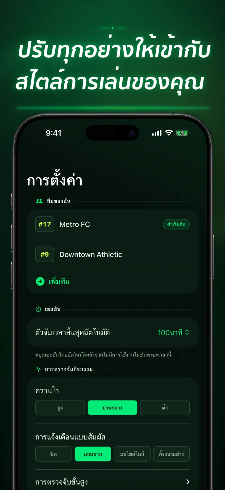
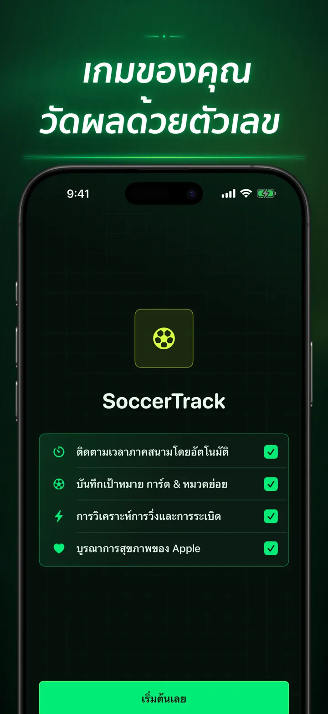

Soccer Time Track
เวลาเล่นและวิเคราะห์ฟุตบอล
เริ่มเซสชันแล้วลงเล่น Apple Watch จะแยกเวลาในสนามกับข้างสนามอัตโนมัติ พร้อมบันทึกข้อมูลสด สปรินต์ เหตุการณ์ และแนวโน้ม
ดาวน์โหลดจาก App Store
เกี่ยวกับแอป
มองเกมของคุณในมุมใหม่
Soccer Time Track เปลี่ยน Apple Watch ให้เป็นผู้ช่วยวันแข่งขันสำหรับนักฟุตบอลที่อยากรู้มากกว่าแค่สกอร์สุดท้าย เริ่มจากข้อมือ โฟกัสกับเกม แล้วค่อยดูภาพรวมผลงานอย่างละเอียดบน iPhone
เวลาในสนามแบบอัตโนมัติ
รู้ได้ว่าคุณลงเล่นจริงเมื่อใด สัญญาณการเคลื่อนไหว การออกกำลังกาย และตำแหน่งจะช่วยแยกช่วงเล่น ช่วงกิจกรรมน้อย และเวลาข้างสนาม คุณจะได้รับ:
- เวลาในสนามและข้างสนาม
- ช่วงการเล่นและไทม์ไลน์ที่ชัดเจน
- รายละเอียดว่าทั้งเซสชันดำเนินไปอย่างไร
วันแข่งขันจากข้อมือ
เลือก แมตช์ ฝึกซ้อม กระชับมิตร หรือ อื่นๆ ระหว่างเล่น บันทึกได้ทั้ง:
- ประตูของทีมคุณและคู่แข่ง
- ประตูและแอสซิสต์ของคุณ
- ใบเหลืองและใบแดง
- การเปลี่ยนตัวและช่วงการแข่งขัน
วัดผลงานของคุณ
ดูได้มากกว่าจำนวนนาทีด้วยข้อมูลต่อไปนี้:
- ระยะทาง
- ความเร็วเฉลี่ยและสูงสุด
- สปรินต์และการเร่งความเข้มข้นสูง
- อัตราการเต้นหัวใจและแคลอรีที่ใช้
- จังหวะก้าวและความเร่ง
ข้อมูลสด โฟกัสเต็มที่
iPhone ที่จับคู่สามารถแสดงค่าต่างๆ แบบสด ขณะที่ Apple Watch ยังคงบันทึกการออกกำลังกาย คุณจึงโฟกัสกับเกมได้เต็มที่ ส่วนข้อมูลจะถูกเก็บอยู่เบื้องหลัง
ดูพัฒนาการของคุณ
รวมแมตช์ การฝึกซ้อม เกมกระชับมิตร และเซสชันอื่นไว้ในประวัติเดียว ดูแนวโน้มและสถิติส่วนตัว เปรียบเทียบผลงาน และเพิ่มทีม หมายเลขเสื้อ คู่แข่ง สถานที่ และโน้ต เพื่อเก็บเรื่องราวของแต่ละผลการแข่งขัน
ต้องการใช้ข้อมูลที่อื่นใช่ไหม ส่งออกเซสชัน ช่วงการเล่น และเหตุการณ์ในแมตช์เป็น CSV หรือ JSON ได้
สร้างมาเพื่อ APPLE WATCH และแอปสุขภาพ
เมื่อคุณอนุญาต Soccer Time Track จะใช้ข้อมูลการออกกำลังกาย อัตราการเต้นหัวใจ การเคลื่อนไหว และตำแหน่งเพื่อสร้างการวิเคราะห์ และบันทึกการออกกำลังกายฟุตบอลที่เสร็จแล้วลงในแอปสุขภาพ การติดตามอัตโนมัติต้องใช้ Apple Watch และยังเพิ่มเซสชันด้วยตนเองบน iPhone ได้
ข้อมูลของคุณ เกมของคุณ
เซสชันจะอยู่บนอุปกรณ์ของคุณ และเมื่อเปิดการซิงค์ iCloud จะอยู่ในฐานข้อมูล iCloud ส่วนตัวของคุณ Soccer Time Track ไม่ต้องมีบัญชี ไม่มีโฆษณา และไม่ใช้การวิเคราะห์จากบุคคลที่สาม
ไม่ต้องเดาอีกว่าคุณลงเล่นนานแค่ไหน มาดูกันว่าคุณทำอะไรได้บ้างในทุกนาที
นโยบายความเป็นส่วนตัว: https://masawata.net/SoccerTimeTrack/privacy-policy.html ข้อกำหนดการให้บริการ: https://www.apple.com/legal/internet-services/itunes/dev/stdeula/
ภาพหน้าจอ









Soccer Time Track
เริ่มเซสชันแล้วลงเล่น Apple Watch จะแยกเวลาในสนามกับข้างสนามอัตโนมัติ พร้อมบันทึกข้อมูลสด สปรินต์ เหตุการณ์ และแนวโน้ม
ดาวน์โหลดจาก App Store